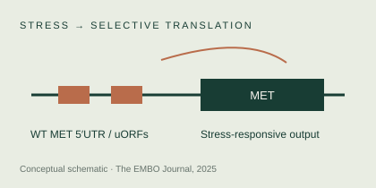
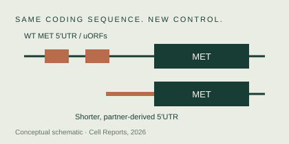
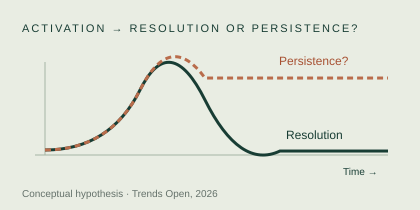

The EMBO Journal · 2025

Stress can drive
MET translation.
Connecting the integrated stress response to MET-dependent invasive growth.
The mechanism in context →Molecular biology · Cancer adaptation
I’m Dogus Altintas, a molecular biologist studying how cells adapt to stress — and how changes in protein synthesis can support cancer progression.
Molecular biology · Translational control · Invasive growth
Recent work / 2025—2026
All publications ↗The EMBO Journal · 2025

Connecting the integrated stress response to MET-dependent invasive growth.
The mechanism in context →Cell Reports · 2026

Oncogenic fusions can alter translational regulation while preserving protein structure.
How UTR rewiring works →Trends Open · 2026 / Opinion

A framework for cancer as the chronic stabilization of invasive growth.
Explore the hypothesis →The researcher behind the questions
My work connects molecular mechanisms with a broader question: how does a temporary response become a lasting cellular state?
Explore my scientific trajectory, recent publications and the direction of my proposed independent research programme.
The next questions
SATURN brings these questions into a proposed independent research programme.
Discover the programme ↗Scientific discussion & opportunities
I welcome conversations about translational control, oncogene regulation and persistent adaptive states.
Get in touch ↗